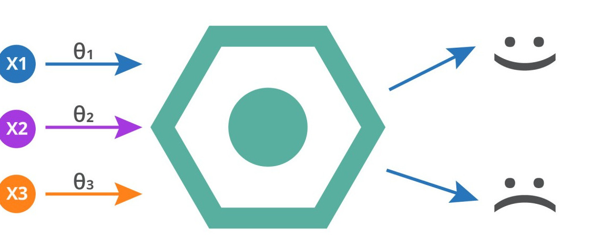

Objective: Build a disease prediction based on user input features using regression, which is a commonly used machine learning algorithms
Part 3: Download The Dataset
Dataset Overview:
Part 4: Import the necessary libraries
pandas: a Python library for working with data sets. It has functions for analysing, cleaning, exploring, and manipulating data
sklearn: a Python library has machine learning and statistical modeling methods including classification, regression, clustering and dimensionality reductionmatplotlib: a Python library for creating static, animated, and interactive visualisations.
2. The code needed to import these libraries into your environment is written below:
Code:
# Required libraries
import pandas as pd
import seaborn as sns
import matplotlib.pyplot as plt
from sklearn.model_selection import train_test_split
from sklearn.preprocessing import LabelEncoder
Part 5: Load The Dataset
1. We need to load the DataFrame from the .csv file:
df = pd.read_csv("LiverPatientDataset.csv", encoding='unicode_escape')
2. To see and return a specified number of rows of strings from the top of the data we loaded. We need to write the code below.
Code:
df.head()
df.tail()
df.info()
Part 6: Preprocess and Clean the Data
1. After loading the data, we will need to cleaning the dataset, handling missing values, and encoding categorical data
2. First, we need to check for missing values, as handling missing data is crucial for improving model accuracy. For that, we can simply drop the rows and columns with missing data, or replace missing values with the mean or median of the column. This works well for numeric data without outliers.
Code:
# Check for missing values
df.isnull()
print("Missing values per column:\n", df.isnull().sum())
# Drop rows with missing target values or fill other missing values appropriately df.dropna(subset=['Result'], inplace=True) df.fillna(df.median(), inplace=True)
3. We also need to encode that data by converting categories (text or labels) into numerical values that machine learning models can understand. In this way, each category is assigned a unique integer. For example, "Male" could be 0 and "Female" could be 1.
Code:
# Encode categorical data (e.g., Gender)
label_encoder = LabelEncoder()
df['Gender of the patient'] = label_encoder.fit_transform(df['Gender of the patient'].astype(str))
df
# Display cleaned data info
print(df.info())
Part 7: Feature Selection
1. We need to use a correlation matrix to identify variables with strong positive or negative relationships and to see which variables are highly correlated (which means that they add redundant information). The code below also show a heatmap to visualize the correlation between the variables
Code:# Correlation matrix to select relevant features
plt.figure(figsize=(10, 8))
sns.heatmap(df.corr(), annot=True, cmap='coolwarm')
plt.title('Feature Correlation Matrix')
plt.show()
2. We need to prepare the data to be fed to the model for training – in this case, our model is a regression algorithm.
# Define features and target variable
X = df.drop(['Result'], axis=1)
y = df['Result']
Part 8: Model Training and Evaluation
1. In this case, we will use logistic regression to train our model. Logistic regression is a supervised machine learning algorithm widely used for binary classification tasks, such as identifying whether an email is spam or not and diagnosing diseases by assessing the presence or absence of specific conditions based on patient test results.
Code:
from sklearn.metrics import accuracy_score, classification_report, confusion_matrix
from sklearn.model_selection import train_test_split
from sklearn.linear_model import LogisticRegression
from sklearn.metrics import accuracy_score, classification_report, confusion_matrix
from sklearn.model_selection import train_test_split
2. Split the dataset into training (80%) and testing (20%). Usually, we use between 70-90% of the data for training. However, this varies depending on the amount of data collected and the type of model trained.
# Split the data
X_train, X_test, y_train, y_test = train_test_split(X, y, test_size=0.2, random_state=42)# Initialize models
models = {'Logistic Regression': LogisticRegression(max_iter=1000)}
# Train and evaluate models
for model_name, model in models.items():
model.fit(X_train, y_train)
y_pred = model.predict(X_test)# Evaluation
print(f"\nModel: {model_name}")
print("Accuracy:", accuracy_score(y_test, y_pred))
print("Classification Report:\n", classification_report(y_test, y_pred))